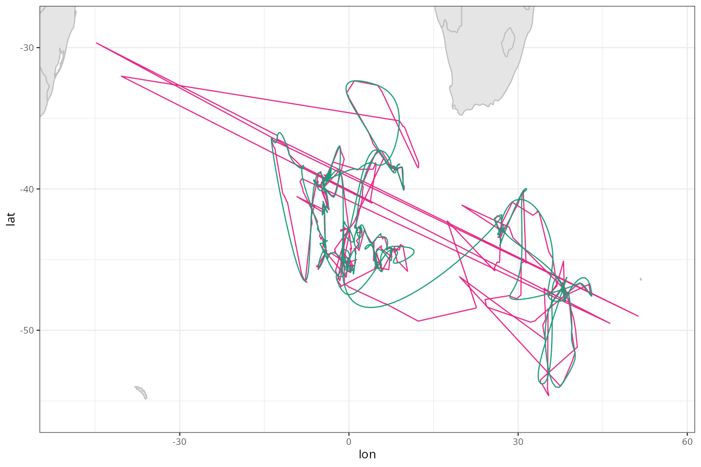
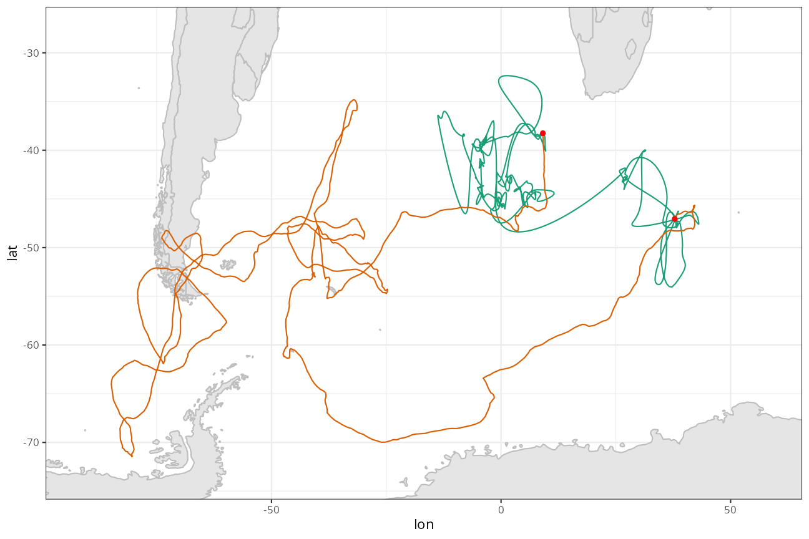
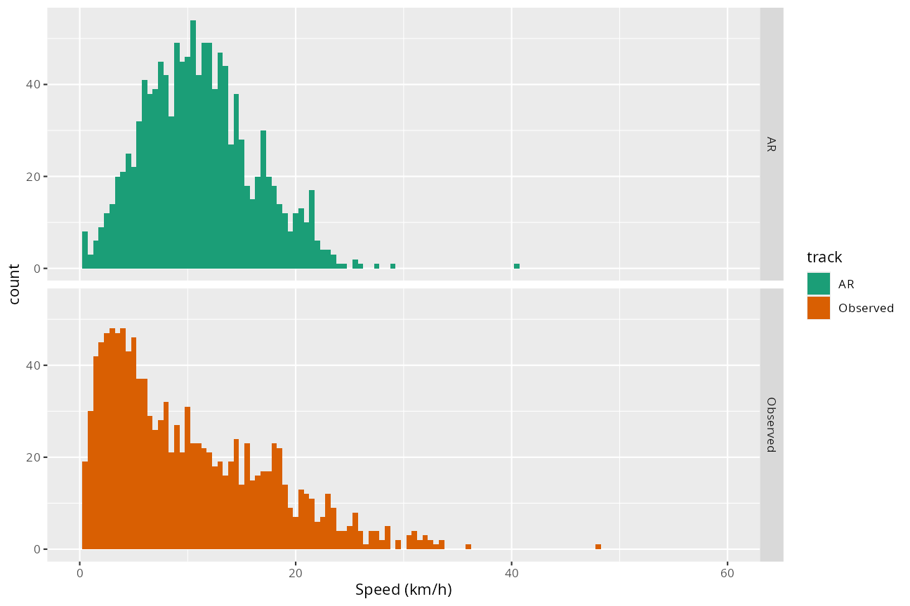
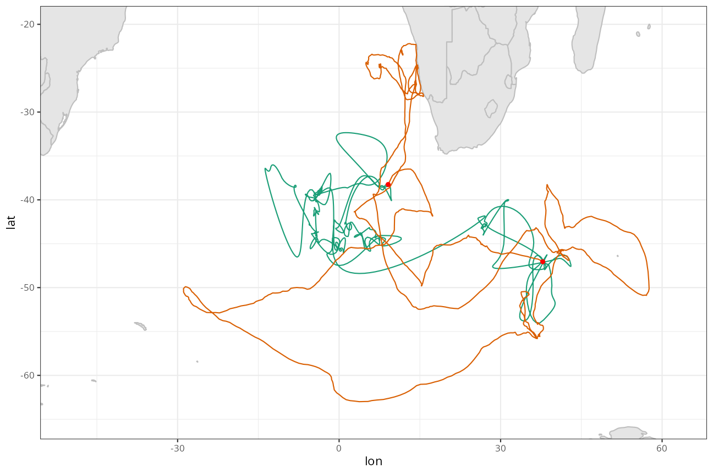
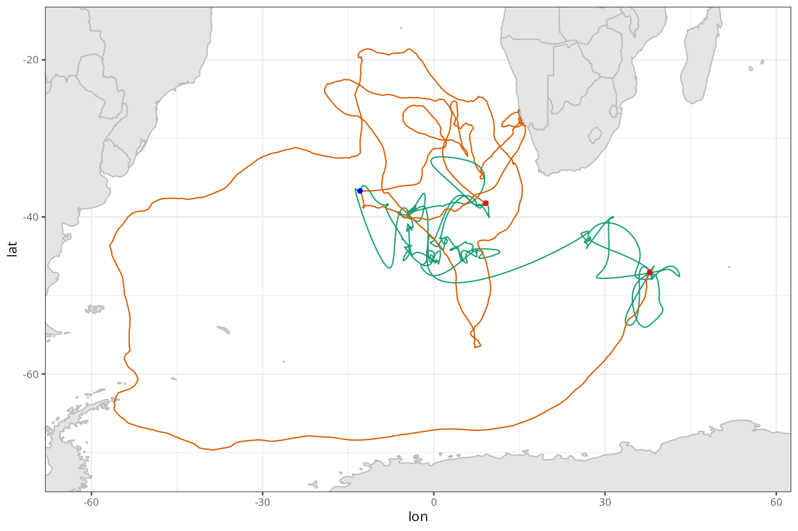
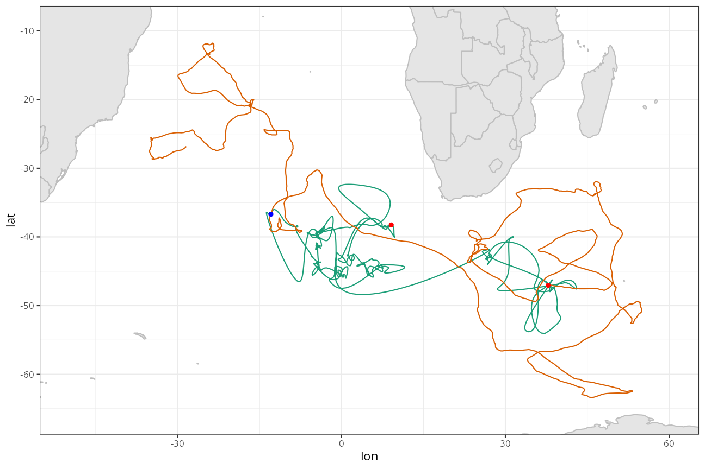
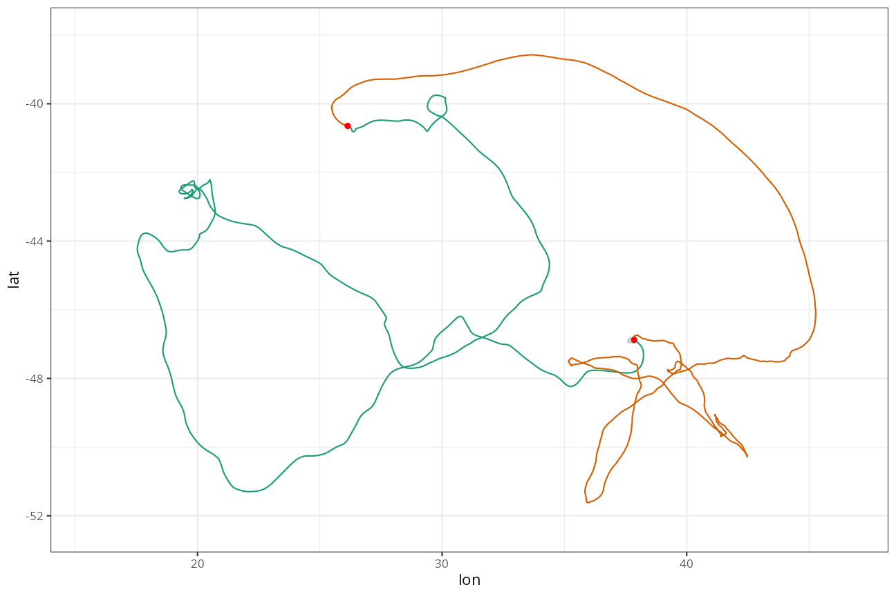
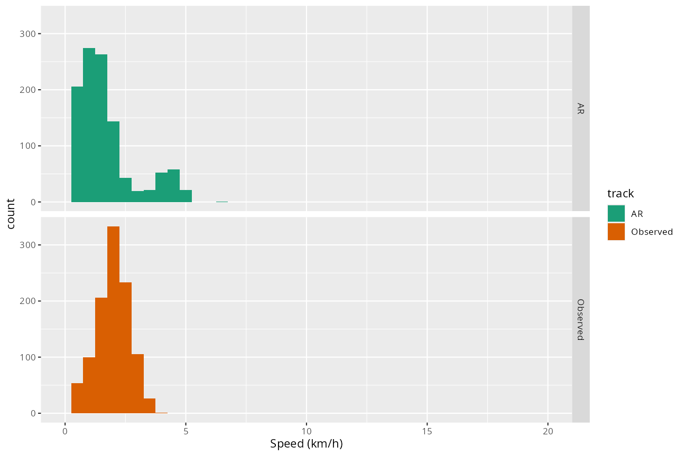

Simulating tracks with the availability package
Ben Raymond, Simon Wotherspoon, Ian Jonsen, Ryan Reisinger
2026-05-28
Source:vignettes/availability.Rmd
availability.RmdBackground
This package provides methods for estimating the geographic space available to an animal, based on an observed track collected by a GPS tag or similar. Broadly, these functions generate a simulated track that preserves certain properties of the original track. The simulated tracks can optionally be constrained by a land mask (or other mask that prevents the simulated track from visiting unwanted locations). It can also be forced to pass through fixed points at certain times, allowing (for example) simulated tracks to finish at the same point from which they started.
The simulated tracks only attempt to preserve basic properties of the observed track, such as the speeds exhibited by the animal and the overall track duration. The intention is not to explicitly reproduce behavioural states such as area-restricted searching. Rather, the goal is to estimate a plausible track that the animal might have produced, if it did not have any environmental or other preferences governing its movements. The geographic and environmental properties of the actual track can then be compared to those of simulated tracks, giving insights into the preferred habitats of the animal.
For application examples, see e.g. Raymond et al. (2015), Reisinger et al. (2018), Courbin et al. (2018), and Péron et al. (2018).
Usage examples
Load the availability package, and some others that we’ll use:
library(availability)
library(trip)
library(aniMotum)
library(geosphere)
library(ggplot2)
library(maps)
cpal <- c("#1B9E77", "#D95F02", "#7570B3", "#E7298A", "#66A61E", "#E6AB02")Some helper functions used in this demo:
base_map <- function(lon_range, lat_range) {
ggplot(mapping = aes(lon, lat)) +
borders("world", fill="grey90",colour="grey") +
coord_cartesian(xlim = lon_range + diff(lon_range) * 0.05 * c(-1, 1),
ylim = lat_range + diff(lat_range) * 0.05 * c(-1, 1)) +
theme_bw()
}Sooty Albatross
The track of a sooty albatross from the Prince Edwards Islands, from
Reisinger et al. (2018). First pass the data through aniMotum’s
fit_ssm function to produce a filtered track with
evenly-sampled 3-hourly time steps:
data(ptt_data)
time_step <- 3
set.seed(28)
track_data <- ptt_data$DMS[, c("individual_id", "date", "location_quality",
"decimal_longitude", "decimal_latitude")]
names(track_data) <- c("id", "date", "lc", "lon", "lat")
fit <- fit_ssm(track_data, time.step = time_step, control = ssm_control(verbose = 0))
pred <- grab(fit, what = "predicted")Plot the raw (magenta) and filtered/interpolated (green) versions of the track:
base_map(range(track_data$lon), range(track_data$lat)) +
geom_path(data = track_data, colour = cpal[4]) + ## observed track
geom_path(data = pred, colour = cpal[1]) ## filtered track
Simulating a track by the VAR method
Fit a vector-autoregressive movement model to this filtered track. This model assumes that the x- and y-speeds at time t are a linear function of the speeds at time t-1, plus random noise.
arfit <- surrogateARModel(pred[, c("lon", "lat")])Now we can use that fitted model to generate new tracks. By default, the end points of the simulated track are fixed to the same start and end points as the original track, and no land mask is applied:
trkar <- surrogateAR(arfit, as.matrix(pred[, c("lon", "lat")]), pred$date)Plot the observed (filtered/interpolated) track (green), simulated track (orange), and track end points (red dots).
sx <- setNames(as.data.frame(trkar$xs), c("lon", "lat")) ## simulated track as a data.frame
base_map(range(track_data$lon, sx$lon), range(track_data$lat, sx$lat)) +
geom_path(data = pred, colour = cpal[1]) + ## observed track
geom_path(data = sx, colour = cpal[2]) + ## simulated track
geom_point(data = pred[c(1, nrow(pred)), ], col = "red") ## start and end points
Comparison of simulated tracks to the observed track
The speed distributions of the tracks can be compared directly:
step_len <- function(z) distVincentyEllipsoid(z[-nrow(z), 1:2], z[-1, 1:2]) / 1e3
temp <- data.frame(speed = step_len(pred[, c("lon", "lat")]) / time_step, track = "Observed")
temp <- rbind(temp, data.frame(speed = step_len(trkar$xs) / time_step, track = "AR"))
ggplot(data = temp, aes(x = speed, fill = track)) + geom_histogram(binwidth = 0.5) +
facet_grid(track~.) + scale_x_continuous(breaks = seq(from = 0, to = 60, by = 5)) +
xlab("Speed (km/h)") + scale_fill_manual(values = cpal) + xlim(c(0, 60))
The observed track appears to have a number of segments with slow speeds (see the peak in the histogram at around 3 km/h, possibly related to area-restricted searching), superimposed on a broad distribution of speeds up to about 35 km/h.
The AR-based method fails to reproduce quite the same shape of the distribution — it peaks at a higher speed — but does produce a simulated track that is plausible in the sense that it has speeds in largely the same range as the observed track.
Simulating tracks: land masking
By default, the end points of the simulated track are fixed to the
same start and end points as the original track, and no land mask is
applied. A land mask can be applied via the point.check
argument. For example, using the land mask supplied with the
package:
trkar <- surrogateAR(arfit, as.matrix(pred[, c("lon", "lat")]), pred$date,
point.check = gshhsMask())
sx <- setNames(as.data.frame(trkar$xs), c("lon", "lat")) ## simulated track as a data.frame
base_map(range(track_data$lon, sx$lon), range(track_data$lat, sx$lat)) +
geom_path(data = grab(fit, what = "predicted"), colour = cpal[1]) + ## observed track
geom_path(data = sx, colour = cpal[2]) + ## simulated track
geom_point(data = pred[c(1, nrow(pred)), ], col = "red") ## start and end points
The point.check argument accepts a function of the form
function(tm, pt) that returns TRUE if the
point should be accepted and FALSE if not. Note that this
function can accept a time coordinate as well as a location, and so the
mask can be made time-varying if required (e.g. dynamically masking out
areas covered by sea ice).
Simulating tracks: fixing points
By default, the first and last points of the simulated track are
fixed to match those of the template track. These fixed points can be
removed, or other fixed points enforced, via the fixed
parameter. (For the AR method, the first point must always be
fixed.)
Fix an additional arbitrary point on the path (indicated by the blue point on the plot):
fixed <- logical(nrow(pred))
fixed[1] <- fixed[nrow(pred)] <- fixed[750] <- TRUE ## fix the first, last, and 750th point
trkar <- surrogateAR(arfit, as.matrix(pred[, c("lon", "lat")]), pred$date, fixed,
point.check = gshhsMask())
sx <- setNames(as.data.frame(trkar$xs), c("lon", "lat")) ## simulated track as a data.frame
base_map(range(track_data$lon, sx$lon), range(track_data$lat, sx$lat)) +
geom_path(data = grab(fit, what = "predicted"), colour = cpal[1]) + ## observed track
geom_path(data = sx, colour = cpal[2]) + ## simulated track
geom_point(data = pred[c(1, nrow(pred)), ], col = "red") + ## start and end points
geom_point(data = sx[750, ], col = "blue") ## fixed point
Repeat but do not fix final endpoint:
fixed <- logical(nrow(pred))
fixed[1] <- fixed[750] <- TRUE ## fix the first and 750th point
trkar <- surrogateAR(arfit, as.matrix(pred[, c("lon", "lat")]), pred$date, fixed,
point.check = gshhsMask())
sx <- setNames(as.data.frame(trkar$xs), c("lon", "lat")) ## simulated track as a data.frame
base_map(range(track_data$lon, sx$lon), range(track_data$lat, sx$lat)) +
geom_path(data = grab(fit, what = "predicted"), colour = cpal[1]) + ## observed track
geom_path(data = sx, colour = cpal[2]) + ## simulated track
geom_point(data = pred[c(1, nrow(pred)), ], col = "red") + ## start and end points
geom_point(data = sx[750, ], col = "blue") ## fixed point
Elephant Seal
Elephant seal data from Reisinger et al. (2018).
track_data <- ptt_data$SES[, c("individual_id", "date", "location_quality",
"decimal_longitude", "decimal_latitude")]
names(track_data) <- c("id", "date", "lc", "lon", "lat")
fit <- fit_ssm(track_data, time.step = time_step, control = ssm_control(verbose = 0))Use the fitted model to determine parameters and generate new path fixing both ends, and using a land mask:
pred <- grab(fit, what = "predicted")
arfit <- surrogateARModel(pred[, c("lon", "lat")])
trkar <- surrogateAR(arfit, as.matrix(pred[, c("lon", "lat")]), pred$date,
point.check = gshhsMask())Compare the tracks (original track in green, AR-simulated track in orange):
sx <- setNames(as.data.frame(trkar$xs), c("lon", "lat")) ## simulated track as a data.frame
base_map(range(track_data$lon, sx$lon), range(track_data$lat, sx$lat)) +
geom_path(data = grab(fit, what = "predicted"), colour = cpal[1]) + ## observed track
geom_path(data = sx, colour = cpal[2]) + ## simulated track
geom_point(data = pred[c(1, nrow(pred)), ], col = "red") ## start and end points
Compare speed distributions as we did before:
temp <- data.frame(speed = step_len(pred[, c("lon", "lat")]) / time_step, track = "Observed")
temp <- rbind(temp, data.frame(speed = step_len(trkar$xs) / time_step, track = "AR"))
ggplot(data = temp, aes(x = speed, fill = track)) + geom_histogram(binwidth = 0.5) +
facet_grid(track~.) + scale_x_continuous(breaks = seq(from = 0, to = 20, by = 5)) +
xlab("Speed (km/h)") + scale_fill_manual(values = cpal) + xlim(c(0, 20))
References
[1] Raymond B, Lea MA, Patterson T, Andrews-Goff V, Sharples R, Charrassin J-B, Cottin M, Emmerson L, Gales N, Gales R, Goldsworthy SD, Harcourt R, Kato A, Kirkwood R, Lawton K, Ropert-Coudert Y, Southwell C, van den Hoff J, Wienecke B, Woehler EJ, Wotherspoon S, Hindell MA (2015) Important marine habitat off East Antarctica revealed by two decades of multi-species predator tracking. Ecography. doi:10.1111/ecog.01021
[2] Reisinger RR, Raymond B, Hindell MA, Bester MN, Crawford RJM, Davies D, de Bruyn PJN, Dilley BJ, Kirkman SP, Makhado AB, Ryan PG, Schoombie S, Stevens K, Sumner MD, Tosh CA, Wege M, Whitehead TO, Wotherspoon S, Pistorius PA (2018) Habitat modelling of tracking data from multiple marine top predators reveals important habitat in the Southern Indian Ocean. Diversity and Distributions. doi:10.1111/ddi.12702
[3] Courbin N, Besnard A, Péron C, Saraux C, Fort J, Perret S, Tornos J, Grémillet D (2018) Short-term prey field lability constrains individual specialisation in resource selection and foraging site fidelity in a marine predator. Ecology Letters. doi:10.1111/ele.12970
[4] Péron C, Authier M, Grémillet D (2018) Testing the transferability of track-based habitat models for sound marine spatial planning. Diversity and Distributions. doi:10.1111/ddi.12832